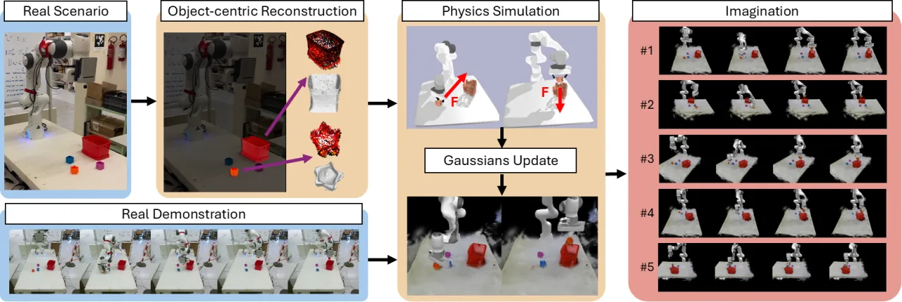
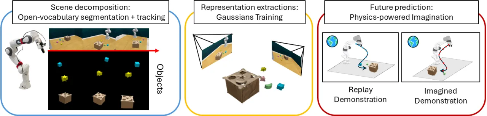
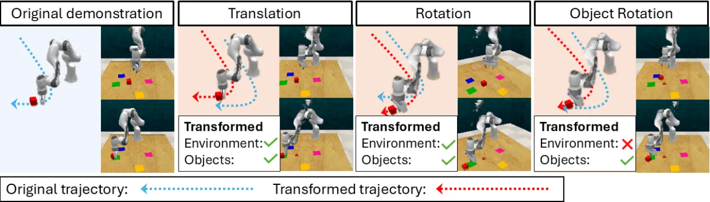
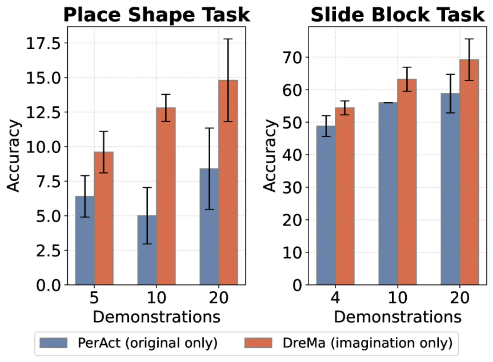
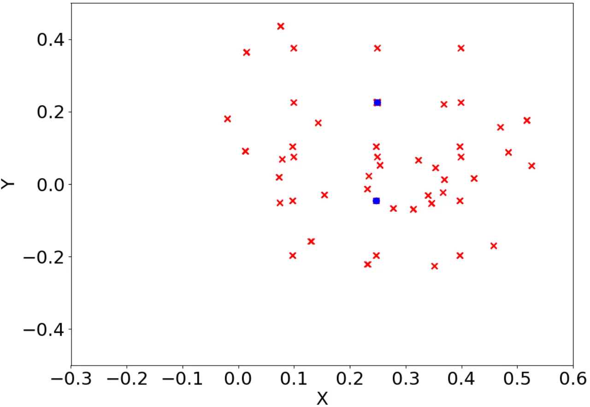

本文提出 DreMa，一个将机器人世界模型视为"可学习数字孪生"的框架。系统结合 Gaussian Splatting 与物理仿真器，使机器人能够"想象"新颖的物体配置并预测动作后果，从而以极少的示范数据高效学习操控策略，最终在真实 Franka Emika Panda 机器人上实现每个任务变体仅需单次示范（one-shot）的策略学习。
机器人操控策略学习面临一个根本性挑战：如何从极少量的示范中泛化到未见过的物体配置？现有世界模型往往在训练分布之外产生不真实的"幻觉"，无法提供可靠的数据增广。
"We present DreMa, which builds a compositional manipulation world model, treated as a learnable digital twin of the environment, that explicitly models the environment composing object assets, a robot agent model, world dynamics, and manipulation tasks."

DreMa 将世界表示为四个组件的组合：K 个物体资产（Object Assets）、机器人智能体模型、世界动力学算子（Physics Engine）以及操控任务集合。通过在此组合表示上施加等变变换，系统可以低成本合成大量真实且多样化的示范。

系统使用带深度监督的 2D Gaussian Splatting 为每个物体独立建模。每个 Gaussian 表示为 g = (p, r, s, α, c)，分别编码位置、朝向、尺度、不透明度和颜色，支持高质量新视角合成。场景分解通过开放词汇跟踪器 DEVA 自动完成，仅需"object""table"等简单文本提示。
Gaussian Splat 被转换为网格 M_k，集成至 PyBullet 物理仿真器。位置与姿态更新遵循牛顿力学： μ_{t+1} = μ_t + Δμ_{1…K}，ρ_{t+1} = Δρ_{1…K} · ρ_t。物理引擎保证了变换后场景的物理合理性，避免了纯神经网络生成方法的"幻觉"问题。
针对操控任务的数据增广需要保持任务语义的等变性。DreMa 设计了三类变换：

实验分为两部分：（1）基于 RLBench 仿真基准的系统评估，以 PerAct 为基线策略，测试 9 个任务的单次与多次示范设置；（2）在真实 Franka Emika Panda 机器人上的 5 个操控任务验证，每任务各测试 10 个分布内（in-distribution）和 10 个分布外（out-of-distribution）配置。
| 任务 | PerAct Original | DreMa + Original | 提升 |
|---|---|---|---|
| Close jar | 38.4% | 51.2% | +12.8% |
| Insert peg | 0.0% | 2.4% | +2.4% |
| Lift | 22.8% | 23.6% | +0.8% |
| Pick cup | 13.2% | 34.4% | +21.2% |
| Sort shape | 6.4% | 11.2% | +4.8% |
| 平均 | 16.0% | 25.1% | +9.1% |
| 任务（示范数） | PerAct 分布内 | PerAct 分布外 | DreMa 分布内 | DreMa 分布外 |
|---|---|---|---|---|
| Pick block（4 demos） | 55% | 50% | 90% | 90% |
| Pick shape（5 demos） | 30% | 10% | 35% | 30% |
| Push（3 demos） | 40% | 10% | 80% | 60% |
| Place object（4 demos） | 20% | 10% | 65% | 40% |
| Erase（4 demos） | 30% | 20% | 50% | 50% |
| 平均 | 31.7% | 25.0% | 62.9% | 58.3% |

作者在 close jar 任务上分析了各变换组件的贡献（所有结果均为 PerAct 策略、1 shot 设置）：
| 配置 | Close Jar 成功率 |
|---|---|
| 仅 Roto-translation | 41.2% |
| 仅 Object rotation | 25.2% |
| 两者组合（DreMa 完整） | 51.2% |
世界模型定位精度（表3，真实机器人实验）：Pick block 的平均定位误差为 0.010 m，Pick shape 为 0.050 m，Push 为 0.049 m，总体均值 0.038 m，验证了 Gaussian Splatting + 物理仿真管线的定量准确性。

当前系统假设整个环境对传感器完全可见，需要完整的环境观测来支持物理建模和外观建模。遮挡严重或视角受限的场景会导致重建质量下降。
现有框架仅能处理刚性物体；铰接（articulated）和可变形（deformable）物体仍是挑战，尽管 Dynamic Gaussian Splatting 领域已有初步进展。
世界模型在构建时不集成感觉反馈（sensory feedback）。论文指出，引入感觉反馈可提升准确性并改进策略学习，但这尚未在当前系统中实现。
对于大型、多样化的环境，仿真复杂度会显著增加，当前系统的可扩展性尚未在此类场景中得到验证。
系统需要精细的相机标定（camera calibration）和物理参数估计（physical parameter estimation），论文 Appendix J 中有详细说明。这些工程要求提高了部署门槛，限制了"即插即用"的实用性。